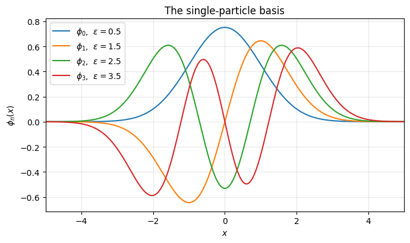
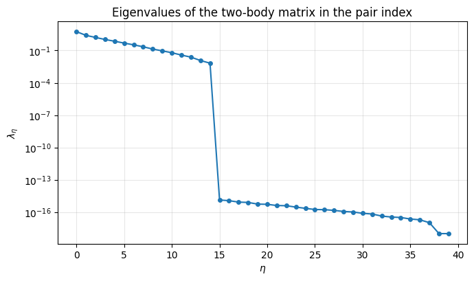
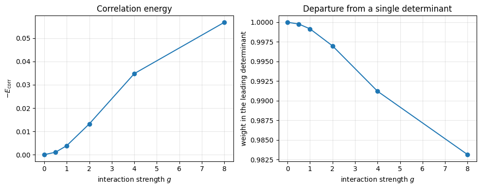
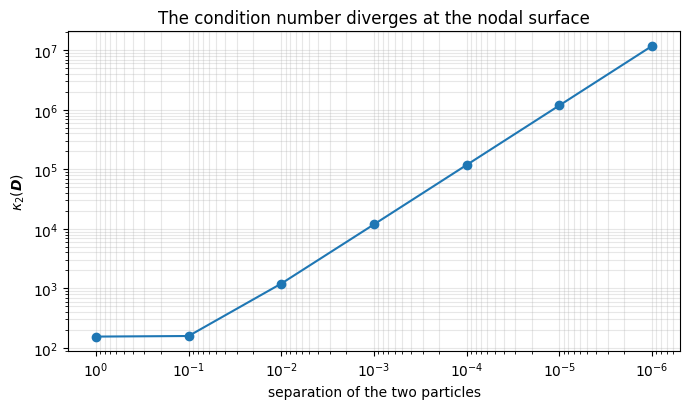

2. From linear algebra to many-body physics#
Executable companion to chapter 2 of Quantum mechanics for Many-particle Systems. Everything in that chapter is linear algebra applied to antisymmetric wave functions, and every claim made there can be checked numerically. We do so here for:
the single-particle basis and its one- and two-body matrix elements;
the Slater determinant: antisymmetry, the Pauli principle, and the fact that its occupation numbers are exactly 1 and 0;
basis changes: \(\det(\boldsymbol{C})\det(\boldsymbol{\Phi})\), and the invariance of the energy under unitary rotations of the occupied orbitals;
the energy functional \(E[\Psi]\) and the cost of the two-body matrix elements;
Hartree-Fock as a repeated eigenvalue problem, and the correlation energy that a single determinant misses.
The model is spinless fermions in a one-dimensional harmonic trap with a softened Coulomb repulsion. Spin is suppressed: it adds bookkeeping but nothing conceptual.
import numpy as np
import matplotlib.pyplot as plt
np.set_printoptions(precision=8, suppress=True)
rng = np.random.default_rng(2026)
2.1. 1. The single-particle basis#
We use the harmonic oscillator eigenfunctions
so the one-body matrix is diagonal, \(\langle p|\hat h_0|q\rangle = \varepsilon_p\delta_{pq}\) — exactly the situation assumed in the chapter. The two-body elements
factorise into pair densities for a local interaction, which is the pair-index picture used in the low-rank factorisation of chapter 1.
class HarmonicOscillatorBasis:
"""Harmonic oscillator orbitals with one- and two-body matrix elements."""
def __init__(self, n_orb=8, n_grid=601, rmax=8.0, strength=1.0,
softening=0.5):
self.n_orb = n_orb
self.strength = strength
self.softening = softening
self.x, self.h = np.linspace(-rmax, rmax, n_grid, retstep=True)
self.phi = self._hermite_functions()
self.epsilon = np.arange(n_orb) + 0.5
def _hermite_functions(self):
x = self.x
phi = np.zeros((self.n_orb, len(x)))
gauss = np.exp(-x**2 / 2.0)
H_prev, H = np.zeros_like(x), np.ones_like(x)
for n in range(self.n_orb): # H_{n+1} = 2x H_n - 2n H_{n-1}
phi[n] = H * gauss
H_prev, H = H, 2.0 * x * H - 2.0 * n * H_prev
phi /= np.sqrt(self.h * np.sum(phi**2, axis=1))[:, None]
return phi
@property
def overlap(self):
return self.h * (self.phi @ self.phi.T)
@property
def one_body(self):
return np.diag(self.epsilon)
def two_body(self):
"""v[p,q,r,s] = <pq|v|rs>."""
n, x, h = self.n_orb, self.x, self.h
K = self.strength / np.sqrt((x[:, None] - x[None, :])**2
+ self.softening**2)
rho = (self.phi[:, None, :] * self.phi[None, :, :]).reshape(n*n, -1)
V = h**2 * (rho @ K @ rho.T) # V[(pr), (qs)]
return V.reshape(n, n, n, n).transpose(0, 2, 1, 3)
@staticmethod
def antisymmetrize(v):
"""<pq|v|rs>_AS = <pq|v|rs> - <pq|v|sr>."""
return v - v.transpose(0, 1, 3, 2)
basis = HarmonicOscillatorBasis(n_orb=8)
print(f"{basis.n_orb} orbitals on {len(basis.x)} grid points")
print(f"|S - I| = {np.linalg.norm(basis.overlap - np.eye(basis.n_orb)):.2e}")
print("single-particle energies:", basis.epsilon)
8 orbitals on 601 grid points
|S - I| = 1.30e-15
single-particle energies: [0.5 1.5 2.5 3.5 4.5 5.5 6.5 7.5]
plt.figure(figsize=(7, 4.2))
for n in range(4):
plt.plot(basis.x, basis.phi[n], label=fr"$\phi_{n}$, $\varepsilon={basis.epsilon[n]}$")
plt.xlim(-5, 5)
plt.xlabel("$x$")
plt.ylabel(r"$\phi_n(x)$")
plt.title("The single-particle basis")
plt.grid(alpha=0.3)
plt.legend()
plt.tight_layout()
plt.show()

2.2. 2. The Slater determinant#
Antisymmetry and the Pauli principle are properties of determinants: swapping two particles swaps two columns and reverses the sign, while putting two particles in the same orbital gives two identical rows and the determinant vanishes.
def factorial(n):
out = 1
for k in range(2, n + 1):
out *= k
return out
class SlaterDeterminant:
"""An antisymmetric N-particle wave function built from orbitals."""
def __init__(self, basis, occupied, coefficients=None):
self.basis = basis
self.occupied = list(occupied)
self.N = len(self.occupied)
if coefficients is None:
C = np.zeros((self.N, basis.n_orb))
for i, p in enumerate(self.occupied):
C[i, p] = 1.0
self.C = C
else:
self.C = np.asarray(coefficients, dtype=float)
def orbitals_on_grid(self):
return self.C @ self.basis.phi
def evaluate(self, coordinates):
"""Phi(x_1, ..., x_N) at one set of coordinates."""
psi = self.orbitals_on_grid()
M = np.array([[np.interp(x, self.basis.x, psi[i])
for x in coordinates] for i in range(self.N)])
return np.linalg.det(M) / np.sqrt(factorial(self.N))
def density_matrix(self):
"""rho_{lambda mu} = sum_i C*_{i lambda} C_{i mu}."""
return self.C.T @ self.C
def occupation_numbers(self):
return np.sort(np.linalg.eigvalsh(self.density_matrix()))[::-1]
phi = SlaterDeterminant(basis, [0, 1, 2])
coords = [0.4, -1.1, 2.0]
a = phi.evaluate(coords)
b = phi.evaluate([coords[1], coords[0], coords[2]])
print(f"Phi(x1,x2,x3) = {a:+.10f}")
print(f"Phi(x2,x1,x3) = {b:+.10f}")
print(f"sum = {a + b:+.2e} <- antisymmetry")
print()
repeated = SlaterDeterminant(basis, [0, 1, 1])
print(f"two particles in orbital 1: Phi = {repeated.evaluate(coords):+.2e}"
f" <- Pauli principle")
Phi(x1,x2,x3) = -0.1756062188
Phi(x2,x1,x3) = +0.1756062188
sum = +0.00e+00 <- antisymmetry
two particles in orbital 1: Phi = -6.29e-18 <- Pauli principle
2.2.1. Occupation numbers#
The density matrix \(\rho_{\lambda\mu}=\sum_i C^*_{i\lambda}C_{i\mu}\) of a Slater determinant is a projector, \(\rho^2=\rho\), so its eigenvalues — the natural occupation numbers of chapter 1 — can only be 0 or 1. Any deviation from those values in a computed state is a direct measure of correlation.
rho = phi.density_matrix()
print("rho^2 = rho ?", np.allclose(rho @ rho, rho))
print("occupation numbers:", np.round(phi.occupation_numbers(), 12))
rho^2 = rho ? True
occupation numbers: [1. 1. 1. 0. 0. 0. 0. 0.]
2.3. 3. Basis changes#
Expanding the orbitals in a fixed basis, \(\psi_p=\sum_\lambda C_{p\lambda}\phi_\lambda\), every entry of the Slater determinant becomes a sum, so by the determinant product rule
If \(\boldsymbol{C}\) is unitary then \(|\det \boldsymbol{C}|=1\) and the state is physically unchanged. The consequence is that the energy is invariant under any unitary rotation among the occupied orbitals — the freedom exploited throughout Hartree-Fock theory. A rotation that mixes occupied with unoccupied orbitals is a different matter entirely.
class EnergyFunctional:
"""E[Psi] = sum_i <i|h|i> + (1/2) sum_ij <ij|v|ij>_AS, in terms of C."""
def __init__(self, basis):
self.basis = basis
self.h = basis.one_body
self.v = basis.antisymmetrize(basis.two_body())
def energy(self, C):
C = np.asarray(C, dtype=float)
one = np.einsum("ia,ib,ab->", C, C, self.h)
two = np.einsum("ia,jb,ic,jd,abcd->", C, C, C, C, self.v)
return one + 0.5 * two
def energy_from_occupied(self, occupied):
occ = list(occupied)
one = sum(self.h[i, i] for i in occ)
two = sum(self.v[i, j, i, j] for i in occ for j in occ)
return one + 0.5 * two
def fock_matrix(self, C):
"""f_ab = h_ab + sum_cd rho_cd <ac|v|bd>_AS."""
rho = C.T @ C
return self.h + np.einsum("cd,acbd->ab", rho, self.v)
functional = EnergyFunctional(basis)
N = 3
C0 = np.eye(basis.n_orb)[:N]
E0 = functional.energy(C0)
Q, _ = np.linalg.qr(rng.normal(size=(N, N))) # rotation inside the occupied space
E1 = functional.energy(Q @ C0)
Qfull, _ = np.linalg.qr(rng.normal(size=(basis.n_orb, basis.n_orb)))
E2 = functional.energy(Qfull[:, :N].T) # mixes occupied and virtual
print(f"|det Q| = {abs(np.linalg.det(Q)):.10f}")
print(f"E, original basis = {E0:.12f}")
print(f"E, rotated occupied space = {E1:.12f} (difference "
f"{abs(E1-E0):.1e})")
print(f"E, occupied-virtual mixing = {E2:.12f} <- this one changes")
print()
print(f"E from the sum over occupied states = "
f"{functional.energy_from_occupied(range(N)):.12f}")
|det Q| = 1.0000000000
E, original basis = 6.468010213126
E, rotated occupied space = 6.468010213126 (difference 2.7e-15)
E, occupied-virtual mixing = 13.849330145293 <- this one changes
E from the sum over occupied states = 6.468010213126
2.4. 4. The price of the two-body matrix elements#
A basis of \(n\) single-particle states needs \(n^4\) two-body elements. But the pair-index matrix \(V_{(pq),(rs)}\) has a numerical rank far below \(n^2\), which is what the low-rank factorisation of chapter 1 exploits:
n = basis.n_orb
pair = basis.two_body().transpose(0, 2, 1, 3).reshape(n*n, n*n)
w = np.linalg.eigvalsh(0.5 * (pair + pair.T))[::-1]
print(f"n = {n}: n^4 = {n**4} matrix elements")
print(f"pair matrix is {n*n} x {n*n}, numerical rank = "
f"{np.linalg.matrix_rank(pair, tol=1e-10)}")
print("leading eigenvalues:", np.array2string(w[:8], precision=4))
plt.figure(figsize=(7, 4.2))
plt.semilogy(np.maximum(w[:40], 1e-18), "o-", ms=4)
plt.xlabel(r"$\eta$")
plt.ylabel(r"$\lambda_\eta$")
plt.title("Eigenvalues of the two-body matrix in the pair index")
plt.grid(alpha=0.3)
plt.tight_layout()
plt.show()
n = 8: n^4 = 4096 matrix elements
pair matrix is 64 x 64, numerical rank = 15
leading eigenvalues: [5.6265 2.5362 1.6283 1.0486 0.7211 0.4849 0.3343 0.2202]

2.5. 5. Hartree-Fock: a repeated eigenvalue problem#
The Hartree-Fock equations say the optimal coefficients are the eigenvectors of the Fock matrix,
but \(f\) depends on the solution through \(\rho\). So one guesses, diagonalises, rebuilds and repeats. This is a preview — Hartree-Fock proper comes later in the book.
class HartreeFock:
"""A minimal self-consistent field loop."""
def __init__(self, functional, n_particles, max_iter=200, tol=1e-10):
self.functional = functional
self.N = n_particles
self.max_iter = max_iter
self.tol = tol
def solve(self, C0=None):
n = self.functional.basis.n_orb
C = np.eye(n)[:self.N] if C0 is None else np.asarray(C0, float)
energy_old = np.inf
self.history = []
for k in range(self.max_iter):
f = self.functional.fock_matrix(C)
values, vectors = np.linalg.eigh(f)
C = vectors[:, :self.N].T # lowest N eigenvectors
energy = self.functional.energy(C)
self.history.append(energy)
self.iterations = k + 1
if abs(energy - energy_old) < self.tol:
break
energy_old = energy
self.C, self.epsilon = C, values
return energy, C
print(f"{'N':>3s} {'E (lowest N orbitals)':>23s} {'E (Hartree-Fock)':>20s} "
f"{'gain':>12s} {'iterations':>12s}")
for N in (2, 3, 4):
hf = HartreeFock(functional, N)
E, C = hf.solve()
E_ref = functional.energy_from_occupied(range(N))
print(f"{N:3d} {E_ref:23.8f} {E:20.8f} {E-E_ref:12.2e} "
f"{hf.iterations:12d}")
N E (lowest N orbitals) E (Hartree-Fock) gain iterations
2 2.69018342 2.66308878 -2.71e-02 9
3 6.46801021 6.39016133 -7.78e-02 9
4 11.77084712 11.62305385 -1.48e-01 9
2.5.1. What a single determinant misses#
For two particles the exact ground state in the same truncated basis can be obtained by diagonalising the Hamiltonian in the space of antisymmetric pairs \(|pq\rangle\), \(p<q\). The difference
is the correlation energy: what no single Slater determinant can reach, and what every method in the rest of the book is built to recover.
def exact_two_particle(functional):
"""Exact energy of two spinless fermions in the truncated basis."""
n = functional.basis.n_orb
pairs = [(p, q) for p in range(n) for q in range(p+1, n)]
H = np.zeros((len(pairs), len(pairs)))
h, v = functional.h, functional.v
for a, (p, q) in enumerate(pairs):
for b, (r, s) in enumerate(pairs):
element = v[p, q, r, s]
if q == s:
element += h[p, r]
if p == r:
element += h[q, s]
if q == r:
element -= h[p, s]
if p == s:
element -= h[q, r]
H[a, b] = element
values, vectors = np.linalg.eigh(H)
return values[0], vectors[:, 0], pairs
hf = HartreeFock(functional, 2)
E_hf, _ = hf.solve()
E_exact, psi, pairs = exact_two_particle(functional)
print(f"E (Hartree-Fock) = {E_hf:.10f}")
print(f"E (exact, same basis) = {E_exact:.10f}")
print(f"correlation energy = {E_exact - E_hf:+.10f}")
print(f"largest amplitude = {np.max(np.abs(psi)):.6f} on the pair "
f"{pairs[int(np.argmax(np.abs(psi)))]}")
E (Hartree-Fock) = 2.6630887806
E (exact, same basis) = 2.6592304859
correlation energy = -0.0038582947
largest amplitude = 0.992981 on the pair (0, 1)
2.5.2. Correlation grows with the interaction#
Repeating the comparison as a function of the interaction strength shows the single-determinant description degrading in a controlled way: the correlation energy grows and the largest natural occupation number falls away from one.
strengths = [0.0, 0.5, 1.0, 2.0, 4.0, 8.0]
rows = []
for g in strengths:
b = HarmonicOscillatorBasis(n_orb=8, strength=g)
f = EnergyFunctional(b)
E_hf, _ = HartreeFock(f, 2).solve()
E_ex, psi, pairs = exact_two_particle(f)
# natural occupations of the exact two-particle state
n = b.n_orb
C = np.zeros((n, n))
for amp, (p, q) in zip(psi, pairs):
C[p, q] += amp / np.sqrt(2)
C[q, p] -= amp / np.sqrt(2)
occ = np.linalg.svd(C, compute_uv=False)**2
# for two fermions the natural occupations come in degenerate pairs, so a
# single Slater determinant has exactly two weights of 1/2 and nothing
# else: the weight in the leading pair is 1 for a determinant and falls
# as correlation sets in
rows.append((g, E_hf, E_ex, E_ex - E_hf, occ[0] + occ[1]))
print(f"{'g':>5s} {'E_HF':>13s} {'E_exact':>13s} {'E_corr':>13s} "
f"{'leading weight':>16s}")
for g, e1, e2, ec, w0 in rows:
print(f"{g:5.1f} {e1:13.8f} {e2:13.8f} {ec:13.2e} {w0:16.8f}")
g E_HF E_exact E_corr leading weight
0.0 2.00000000 2.00000000 0.00e+00 1.00000000
0.5 2.33827316 2.33724977 -1.02e-03 0.99978244
1.0 2.66308878 2.65923049 -3.86e-03 0.99916217
2.0 3.27387365 3.26067497 -1.32e-02 0.99699433
4.0 4.35664342 4.32182781 -3.48e-02 0.99120715
8.0 6.13127327 6.07440965 -5.69e-02 0.98312672
g = [r[0] for r in rows]
fig, ax = plt.subplots(1, 2, figsize=(10, 4))
ax[0].plot(g, [-r[3] for r in rows], "o-")
ax[0].set_xlabel("interaction strength $g$")
ax[0].set_ylabel(r"$-E_{\rm corr}$")
ax[0].set_title("Correlation energy")
ax[0].grid(alpha=0.3)
ax[1].plot(g, [r[4] for r in rows], "o-")
ax[1].set_xlabel("interaction strength $g$")
ax[1].set_ylabel("weight in the leading determinant")
ax[1].set_title("Departure from a single determinant")
ax[1].grid(alpha=0.3)
plt.tight_layout()
plt.show()

2.6. 6. Evaluating Slater determinants in Monte Carlo simulations#
So far the determinant has been needed once. A variational or diffusion Monte Carlo calculation needs it millions of times, together with its gradient and Laplacian. Recomputing everything from scratch costs \(\mathcal{O}(d N^4)\) per sweep; keeping the inverse of the Slater matrix reduces that to \(\mathcal{O}(d N^2)\).
The Slater matrix is \(d_{ij}=\phi_j(\boldsymbol{r}_i)\) — rows are particles, columns are single-particle states. The one observation that makes everything work: moving one particle changes one row.
We use two-dimensional harmonic oscillator orbitals, the standard quantum-dot setting, and differentiate them analytically.
import numpy as np
import matplotlib.pyplot as plt
np.set_printoptions(precision=8, suppress=True)
rng = np.random.default_rng(2026)
class HarmonicOscillator2D:
"""2D oscillator orbitals with closed-form gradient and Laplacian."""
def __init__(self, n_orb, omega=1.0):
self.omega = omega
self.quantum_numbers = self._shells(n_orb)
self.n_orb = len(self.quantum_numbers)
@staticmethod
def _shells(n_orb):
pairs, shell = [], 0
while len(pairs) < n_orb:
for nx in range(shell + 1):
pairs.append((nx, shell - nx))
if len(pairs) == n_orb:
break
shell += 1
return pairs
@staticmethod
def _hermite(n, z):
H_prev, H = np.zeros_like(z), np.ones_like(z)
for k in range(n):
H_prev, H = H, 2.0 * z * H - 2.0 * k * H_prev
return H
def _hermite_d(self, n, z):
return 2.0*n*self._hermite(n-1, z) if n > 0 else np.zeros_like(z)
def _hermite_dd(self, n, z):
return (4.0*n*(n-1)*self._hermite(n-2, z) if n > 1
else np.zeros_like(z))
def value(self, j, r):
nx, ny = self.quantum_numbers[j]
s = np.sqrt(self.omega)
x, y = np.atleast_1d(r[..., 0]), np.atleast_1d(r[..., 1])
return (self._hermite(nx, s*x) * self._hermite(ny, s*y)
* np.exp(-0.5 * self.omega * (x**2 + y**2)))
def gradient(self, j, r):
nx, ny = self.quantum_numbers[j]
s = np.sqrt(self.omega)
x, y = np.atleast_1d(r[..., 0]), np.atleast_1d(r[..., 1])
Hx, Hy = self._hermite(nx, s*x), self._hermite(ny, s*y)
dHx, dHy = s*self._hermite_d(nx, s*x), s*self._hermite_d(ny, s*y)
g = np.exp(-0.5 * self.omega * (x**2 + y**2))
return np.stack([(dHx - self.omega*x*Hx) * Hy * g,
(dHy - self.omega*y*Hy) * Hx * g], axis=-1)
def laplacian(self, j, r):
nx, ny = self.quantum_numbers[j]
w, s = self.omega, np.sqrt(self.omega)
x, y = np.atleast_1d(r[..., 0]), np.atleast_1d(r[..., 1])
Hx, Hy = self._hermite(nx, s*x), self._hermite(ny, s*y)
dHx, dHy = s*self._hermite_d(nx, s*x), s*self._hermite_d(ny, s*y)
ddHx, ddHy = w*self._hermite_dd(nx, s*x), w*self._hermite_dd(ny, s*y)
g = np.exp(-0.5 * w * (x**2 + y**2))
tx = (ddHx - 2.0*w*x*dHx + (w**2*x**2 - w)*Hx) * Hy
ty = (ddHy - 2.0*w*y*dHy + (w**2*y**2 - w)*Hy) * Hx
return (tx + ty) * g
class SlaterMatrix:
"""d_ij = phi_j(r_i), with determinant and inverse from LU."""
def __init__(self, basis, positions):
self.basis = basis
self.positions = np.array(positions, dtype=float)
self.N = len(self.positions)
self.D = self._build(self.positions)
self.Dinv = np.linalg.inv(self.D)
def _build(self, positions):
N = len(positions)
D = np.zeros((N, N))
for i, r in enumerate(positions):
for j in range(N):
D[i, j] = self.basis.value(j, r)[0]
return D
def log_determinant(self):
"""(sign, log|det|) — the only safe form for large N."""
return np.linalg.slogdet(self.D)
def determinant_from_svd(self):
"""|det D| = prod sigma_i, and the condition number for free."""
sigma = np.linalg.svd(self.D, compute_uv=False)
return np.prod(sigma), sigma[0] / sigma[-1]
def condition_number(self):
sigma = np.linalg.svd(self.D, compute_uv=False)
return sigma[0] / sigma[-1]
N = 6
basis = HarmonicOscillator2D(n_orb=N)
slater = SlaterMatrix(basis, rng.normal(size=(N, 2)))
sign, logdet = slater.log_determinant()
prod_sigma, kappa = slater.determinant_from_svd()
print(f"quantum numbers (nx, ny): {basis.quantum_numbers}")
print(f"det(D) = {np.linalg.det(slater.D):+.12e}")
print(f"sign, log|det| (LU) = {sign:+.0f}, {logdet:.12f}")
print(f"prod of sigma (SVD) = {prod_sigma:.12e}")
print(f"condition number = {kappa:.3e}")
quantum numbers (nx, ny): [(0, 0), (0, 1), (1, 0), (0, 2), (1, 1), (2, 0)]
det(D) = -3.027718752373e+00
sign, log|det| (LU) = -1, 1.107809448954
prod of sigma (SVD) = 3.027718752373e+00
condition number = 1.807e+01
2.6.1. The ratio \(R\)#
Expanding both determinants along the row that changed, and using that the cofactors of that row do not depend on it, gives
One dot product — \(\mathcal{O}(N)\) instead of \(\mathcal{O}(N^3)\), and no determinant is computed at all. If the move is accepted the inverse is repaired by Sherman-Morrison in \(\mathcal{O}(N^2)\).
class SlaterUpdater:
"""Ratios and Sherman-Morrison inverse updates for one-particle moves."""
def __init__(self, slater):
self.s = slater
self.refreshes = 0
def ratio(self, i, r_new):
"""R in O(N) operations."""
row = np.array([self.s.basis.value(j, r_new)[0]
for j in range(self.s.N)])
return float(row @ self.s.Dinv[:, i]), row
def accept(self, i, r_new, R=None, row=None):
"""Update D and D^{-1} in O(N^2) operations."""
if row is None:
R, row = self.ratio(i, r_new)
Dinv = self.s.Dinv
S = row @ Dinv # S_j, with S[i] == R
new_inv = Dinv.copy()
for j in range(self.s.N):
if j != i:
new_inv[:, j] = Dinv[:, j] - (S[j] / R) * Dinv[:, i]
new_inv[:, i] = Dinv[:, i] / R
self.s.Dinv = new_inv
self.s.D[i, :] = row
self.s.positions[i] = r_new
def refresh(self):
"""Rebuild the inverse from an LU factorisation."""
self.s.Dinv = np.linalg.inv(self.s.D)
self.refreshes += 1
def inverse_error(self):
return np.linalg.norm(self.s.D @ self.s.Dinv - np.eye(self.s.N))
def gradient_ratio(self, i):
"""grad_i |D| / |D| = sum_j grad_i phi_j(r_i) d^{-1}_{ji}."""
r = self.s.positions[i]
grads = np.array([self.s.basis.gradient(j, r)[0]
for j in range(self.s.N)])
return grads.T @ self.s.Dinv[:, i]
def laplacian_ratio(self, i):
"""lap_i |D| / |D| = sum_j lap_i phi_j(r_i) d^{-1}_{ji}."""
r = self.s.positions[i]
laps = np.array([self.s.basis.laplacian(j, r)[0]
for j in range(self.s.N)])
return float(laps @ self.s.Dinv[:, i])
updater = SlaterUpdater(slater)
print(f"{'move':>5s} {'R (one dot product)':>22s} "
f"{'R (two determinants)':>22s} {'difference':>12s}")
for k in range(4):
i = int(rng.integers(N))
r_new = slater.positions[i] + 0.3 * rng.normal(size=2)
R, row = updater.ratio(i, r_new)
trial = slater.positions.copy()
trial[i] = r_new
R_brute = (np.linalg.det(SlaterMatrix(basis, trial).D)
/ np.linalg.det(slater.D))
print(f"{k:5d} {R:22.14f} {R_brute:22.14f} {abs(R-R_brute):12.2e}")
updater.accept(i, r_new, R, row)
move R (one dot product) R (two determinants) difference
0 0.95284553241365 0.95284553241365 2.22e-16
1 0.48756445139255 0.48756445139255 5.55e-17
2 0.60172621568435 0.60172621568435 1.11e-16
3 1.09657043167297 1.09657043167297 4.44e-16
2.6.2. Gradients and the Laplacian#
Differentiating with respect to \(\boldsymbol{r}_i\) also changes only row \(i\), so the same derivation gives
The first is the quantum force that drives the importance-sampled walk; the second supplies the kinetic energy. We check both against numerical differentiation of \(\ln|D|\) — noting that \(\nabla^2\ln|D| = \nabla^2|D|/|D| - |\nabla|D|/|D||^2\).
def logdet_at(pos):
return np.linalg.slogdet(SlaterMatrix(basis, pos).D)[1]
i, eps = 2, 1.0e-5
grad = updater.gradient_ratio(i)
lap = updater.laplacian_ratio(i)
fd_grad, fd_lap = np.zeros(2), 0.0
base = logdet_at(slater.positions)
for d in range(2):
plus, minus = slater.positions.copy(), slater.positions.copy()
plus[i, d] += eps
minus[i, d] -= eps
fd_grad[d] = (logdet_at(plus) - logdet_at(minus)) / (2*eps)
fd_lap += (logdet_at(plus) - 2*base + logdet_at(minus)) / eps**2
fd_lap += fd_grad @ fd_grad # convert back from log to |D|
print(f"grad|D|/|D| analytic = [{grad[0]:+.10f}, {grad[1]:+.10f}]")
print(f" numerical = [{fd_grad[0]:+.10f}, {fd_grad[1]:+.10f}]")
print(f" |diff| = {np.linalg.norm(grad - fd_grad):.2e}")
print()
print(f"lap|D|/|D| analytic = {lap:+.8f}")
print(f" numerical = {fd_lap:+.8f}")
print(f" |diff| = {abs(lap - fd_lap):.2e}")
grad|D|/|D| analytic = [+2.0166701702, +1.6190576589]
numerical = [+2.0166701706, +1.6190576592]
|diff| = 4.78e-10
lap|D|/|D| analytic = -6.02859782
numerical = -6.02858848
|diff| = 9.35e-06
2.7. 7. The nodal surface, LU and the SVD#
The Slater determinant vanishes on the nodal surface. In the language of chapter 1 that is simply the locus where the Slater matrix becomes singular: the smallest singular value goes to zero and the condition number \(\kappa_2 = \sigma_0/\sigma_{N-1}\) diverges. Since the accuracy of a computed inverse is governed by \(\kappa_2\) and not by the algorithm, this is a property of the problem that no cleverer update formula can avoid.
base_pos = rng.normal(size=(N, 2))
print(f"{'separation':>12s} {'|det D|':>14s} {'kappa_2(D)':>14s} "
f"{'|D D^-1 - I|':>15s}")
seps, kappas = [], []
for sep in (1e0, 1e-1, 1e-2, 1e-3, 1e-4, 1e-5, 1e-6):
pos = base_pos.copy()
pos[1] = pos[0] + np.array([sep, 0.0]) # bring two particles together
s = SlaterMatrix(basis, pos)
err = np.linalg.norm(s.D @ s.Dinv - np.eye(N))
seps.append(sep)
kappas.append(s.condition_number())
print(f"{sep:12.0e} {abs(np.linalg.det(s.D)):14.3e} "
f"{s.condition_number():14.3e} {err:15.2e}")
separation |det D| kappa_2(D) |D D^-1 - I|
1e+00 1.230e+00 1.545e+02 6.17e-15
1e-01 2.264e-01 1.580e+02 7.03e-15
1e-02 2.290e-02 1.201e+03 5.54e-14
1e-03 2.291e-03 1.188e+04 5.54e-13
1e-04 2.291e-04 1.187e+05 7.80e-12
1e-05 2.291e-05 1.187e+06 4.87e-11
1e-06 2.291e-06 1.187e+07 8.42e-10
plt.figure(figsize=(7, 4.2))
plt.loglog(seps, kappas, "o-")
plt.gca().invert_xaxis()
plt.xlabel("separation of the two particles")
plt.ylabel(r"$\kappa_2(\boldsymbol{D})$")
plt.title("The condition number diverges at the nodal surface")
plt.grid(alpha=0.3, which="both")
plt.tight_layout()
plt.show()

2.7.1. Why production codes refresh the inverse#
The Sherman-Morrison update divides by \(R\), so every near-nodal move multiplies the error in \(\boldsymbol{D}^{-1}\) by roughly \(1/R\), and the damage is permanent. Under Metropolis sampling of \(|\Phi|^2\) this is rare — the sampling density itself vanishes on the node — but rare is not never.
# (a) Metropolis sampling: the walk avoids the nodes
walk = np.random.default_rng(11)
s = SlaterMatrix(basis, walk.normal(size=(N, 2)))
u = SlaterUpdater(s)
worst, smallest_R, accepted = 0.0, np.inf, 0
for step in range(5000):
i = int(walk.integers(N))
r_new = s.positions[i] + 0.4 * walk.normal(size=2)
R, row = u.ratio(i, r_new)
if walk.random() < min(1.0, R * R): # Metropolis on |Phi|^2
u.accept(i, r_new, R, row)
accepted += 1
smallest_R = min(smallest_R, abs(R))
worst = max(worst, u.inverse_error())
print(f"(a) 5000 Metropolis moves, {accepted} accepted")
print(f" smallest accepted |R| = {smallest_R:.3f}")
print(f" worst |D D^-1 - I| = {worst:.2e}")
(a) 5000 Metropolis moves, 3253 accepted
smallest accepted |R| = 0.143
worst |D D^-1 - I| = 5.45e-14
# (b) forced near-nodal moves: the error grows like 1/R
s = SlaterMatrix(basis, np.random.default_rng(5).normal(size=(N, 2)))
u = SlaterUpdater(s)
print(f"(b) {'R of the move':>16s} {'|D D^-1 - I| after':>21s}")
print(f" {'(start)':>16s} {u.inverse_error():21.2e}")
for sep in (1e-2, 1e-4, 1e-6, 1e-8):
r_node = s.positions[0] + np.array([sep, 0.0])
R, row = u.ratio(1, r_node)
u.accept(1, r_node, R, row) # step onto the node
r_back = s.positions[0] + np.array([1.0, 0.7])
R2, row2 = u.ratio(1, r_back)
u.accept(1, r_back, R2, row2) # and step away again
print(f" {R:16.2e} {u.inverse_error():21.2e}")
u.refresh()
print(f" {'after LU refresh':>16s} {u.inverse_error():21.2e}")
(b) R of the move |D D^-1 - I| after
(start) 2.22e-15
-7.01e-03 3.37e-14
1.17e-04 3.50e-12
1.17e-06 1.98e-10
1.17e-08 3.23e-08
after LU refresh 1.74e-15
2.8. 8. Spin factorisation#
For a spin-independent Hamiltonian the full determinant may be replaced by
which is not antisymmetric under exchange of opposite spins but gives the same energy (Moskowitz and Kalos). Each factor is half the size, and a move of one particle touches only one of them, so the cost of a full sweep falls from \(\mathcal{O}(N^2)\) and \(\mathcal{O}(N^3)\) to \(\mathcal{O}(N^2/2)\) and \(\mathcal{O}(N^3/4)\).
Nup = Ndown = 4
b = HarmonicOscillator2D(n_orb=max(Nup, Ndown))
up = SlaterMatrix(b, rng.normal(size=(Nup, 2)))
down = SlaterMatrix(b, rng.normal(size=(Ndown, 2)))
s1, l1 = up.log_determinant()
s2, l2 = down.log_determinant()
print(f"log|D_up| = {l1:+.10f} (sign {s1:+.0f})")
print(f"log|D_down| = {l2:+.10f} (sign {s2:+.0f})")
print(f"log|D| = {l1 + l2:+.10f} (sign {s1*s2:+.0f})")
print()
print(f"{'N':>5s} {'ratios, full':>14s} {'inverse, full':>15s}"
f" {'ratios, split':>15s} {'inverse, split':>16s}")
for n in (10, 50, 100):
print(f"{n:5d} {n*n:14.1e} {n**3:15.1e} {n*n//2:15.1e} {n**3//4:16.1e}")
log|D_up| = -0.5611987552 (sign -1)
log|D_down| = -6.9494479805 (sign +1)
log|D| = -7.5106467357 (sign -1)
N ratios, full inverse, full ratios, split inverse, split
10 1.0e+02 1.0e+03 5.0e+01 2.5e+02
50 2.5e+03 1.2e+05 1.2e+03 3.1e+04
100 1.0e+04 1.0e+06 5.0e+03 2.5e+05
2.9. Summary#
The whole of this section is one idea applied four times: moving one particle changes one row of the Slater matrix. From it follow the \(\mathcal{O}(N)\) ratio, the \(\mathcal{O}(N^2)\) inverse update, and the \(\mathcal{O}(dN^2)\) gradients and Laplacians that replace a brute-force \(\mathcal{O}(dN^4)\).
What chapter 1 contributes is the other half: LU gives the determinant and the inverse to start with, and in logarithmic form so nothing overflows; the SVD gives the condition number that says how many digits the inverse has left; and the fact that accuracy is governed by \(\kappa_2\) explains why the nodal surface is a numerical problem and not merely a physical one.
2.10. Where this leads#
Chapter 2 has turned the linear algebra of chapter 1 into physics: the Slater determinant is a determinant, a basis change is a unitary transformation, and Hartree-Fock is a self-consistent Hermitian eigenvalue problem.
What it has also shown is the limit of the construction. A single Slater determinant has occupation numbers of exactly 0 and 1, so it cannot describe correlation at all, and the plots above show how quickly that becomes a problem as the interaction grows. Second quantisation, developed next, provides the machinery to go beyond one determinant without drowning in the permutation algebra of section 2.8.